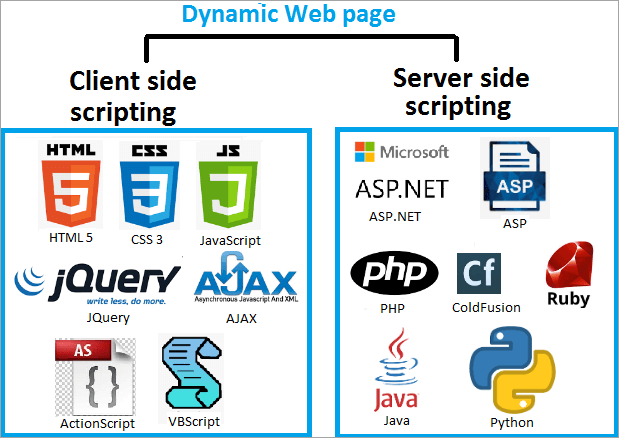

Implantación y administración de servidores web
Introducción
Con la evolución y el acceso libre a Internet, uno de los principales alicientes que han surgido es la publicación de páginas web donde se pueden almacenar unos contenidos bastante atractivos para nosotros y que, al mismo tiempo, pueden ser consultados desde cualquier del mundo para todos.
Cabe decir que, con la popularización de Internet, tanto empresas como usuarios han visto la necesidad de establecer un punto desde donde anunciar sus productos, o bien, a título particular, dar publicidad a las aficiones o capacidades personales mediante la publicación de páginas web.
Las páginas web, en su mayoría en formato HTML, requieren ser alojadas en máquinas que dispongan de espacio en disco para almacenar archivos HTML, imágenes, bloques de código o archivos de vídeo en directorios específicos y, al mismo tiempo, deben ser capaces de entender todo tipo de extensión de los archivos que son enviados en ambos sentidos de la comunicación.

Paralelamente, no podemos dejar de lado la importancia de las medidas de seguridad ante los peligros existentes en Internet. Para ello, las páginas deberán estar diseñadas considerando la incorporación de protocolos de comunicación seguros como, por ejemplo, los desarrollados con el protocolo seguro de transferencia de hipertexto (HTTPS, Hyper Text Transfer Protocol secure) que utilizan claves y estrategias de cifrado propias de las herramientas del protocolo de capa de conexión segura (SSL, secure sockets layer).
Las máquinas que alojan las páginas web reciben la categoría de servidores web. Desde el punto de vista de los servidores, los requerimientos más relevantes son el espacio de disco necesario para poder almacenar la estructura de la página web y una buena conexión de red para que el consumo de la unidad de procesamiento central (CPU, central processing unit ) sea bastante bajo.
El funcionamiento de los servidores web es especial ya que, como si se tratara de un diente de sierra, tienen consumos de recursos puntuales porque podemos estar un tiempo sin peticiones y, de repente, tener una avalancha de peticiones. Esto hace que los servidores web suelan tener un número bajo de procesos en espera. A medida que resultan necesarios, se van arrancando nuevos.
Cabe decir que no todas las peticiones consumen lo mismo, y, por ejemplo, aquellas páginas web que ejecuten programas de interacción con el usuario o requieran cifrado (HTTPS) consumen más recursos que otras páginas web con menos interacción.
¿Qué es un servidor web?
Los servidores web sirven para almacenar contenidos de Internet y facilitar su disponibilidad de forma constante y segura. Cuando visitas una página web desde tu navegador, es en realidad un servidor web el que envía los componentes individuales de dicha página directamente a tu ordenador. Esto quiere decir que para que una página web sea accesible en cualquier momento, el servidor web debe estar permanentemente online.
Toda página accesible en Internet necesita un servidor especial para sus contenidos web. A menudo, las grandes empresas y organizaciones cuentan con un servidor web propio para disponer sus contenidos en Intranet e Internet. Sin embargo, la mayoría de administradores recurren a los centros de datos de proveedores de alojamiento web para sus proyectos. Y cada vez más la tendencia es a usar servicios "cloud" que nos proporcionen los servicios requeridos sin necesidad de instalar, gestionar y mantener el HW asociado.
Independientemente de si tienes un servidor web propio o de si alquilas uno externo, siempre necesitarás un software para gestionar los datos de tu página y mantenerla actualizada. En este sentido, tienes la posibilidad de elegir entre varias soluciones de software para servidores web diseñadas para diferentes aplicaciones y sistemas operativos.
Tecnología de servidores web
Principalmente, el software de un servidor HTTP es el encargado de proporcionar los datos para la visualización del contenido web.
Para abrir una página web, el usuario solo tiene que escribir el URL correspondiente en la barra de direcciones de su navegador web. El navegador envía una solicitud al servidor web, quien responde, por ejemplo, entregando una página HTML. Esta puede estar alojada como un documento estático en el host o ser generada de forma dinámica, lo que significa que el servidor web tiene que ejecutar un código de programa (p. ej., Java o PHP) antes de tramitar su respuesta.
El navegador interpreta la respuesta, lo que suele generar automáticamente más solicitudes al servidor a propósito de, por ejemplo, imágenes integradas o archivos CSS (hojas de estilos).

El protocolo utilizado para la transmisión es HTTP (o su variante cifrada HTTPS), que se basa, a su vez, en los protocolos de red IP y TCP (y muy rara vez en UDP). Un servidor web puede entregar los contenidos simultáneamente a varios ordenadores o navegadores web. La cantidad de solicitudes (requests) y la velocidad con la que pueden ser procesadas depende, entre otras cosas, del hardware y la carga (número de solicitudes) del host. Sin embargo, la complejidad del contenido también juega un papel importante: los contenidos web dinámicos necesitan más recursos que los contenidos estáticos.

La selección del equipo adecuado para el servidor y la decisión de si este debe ser dedicado, virtual o en la nube, se debe hacer pensando siempre en evitar sobrecargas en el servidor. Aunque se haya encontrado un servidor web que se adapta perfectamente a las necesidades del proyecto, siempre se corre el riesgo de que se presenten fallos en él como consecuencia de imprecisiones técnicas o cortes de energía en el centro de datos del host. Aunque no es muy frecuente, durante un período de inactividad de este tipo (downtime), la web no estará disponible.
Otras funciones de los servidores web
Aunque su principal función es la transferencia de contenido web, muchos programas de servidor web ofrecen características adicionales:
| Seguridad | Cifrado de la comunicación entre el servidor web y el cliente vía HTTPS |
|---|---|
| Autenticación del usuario | Autenticación HTTP para áreas específicas de una aplicación web |
| Redirección | Redirección de una solicitud de documento por medio de Rewrite Engine |
| Caché | Almacenamiento en caché de documentos dinámicos para la respuesta eficiente de solicitudes y para evitar una sobrecarga del servidor web |
| Asignación de cookies | Envío y procesamiento de cookies HTTP |
Además del software del servidor, un host puede contener otro tipo de programas, como por ejemplo un servidor FTP para la carga de archivos o un servidor de base de datos para contenidos dinámicos. En general, existen diferentes tipos de servidores web que pueden ser utilizados para numerosos propósitos, por ejemplo, los servidores de correo, los servidores de juegos o los servidores proxy.